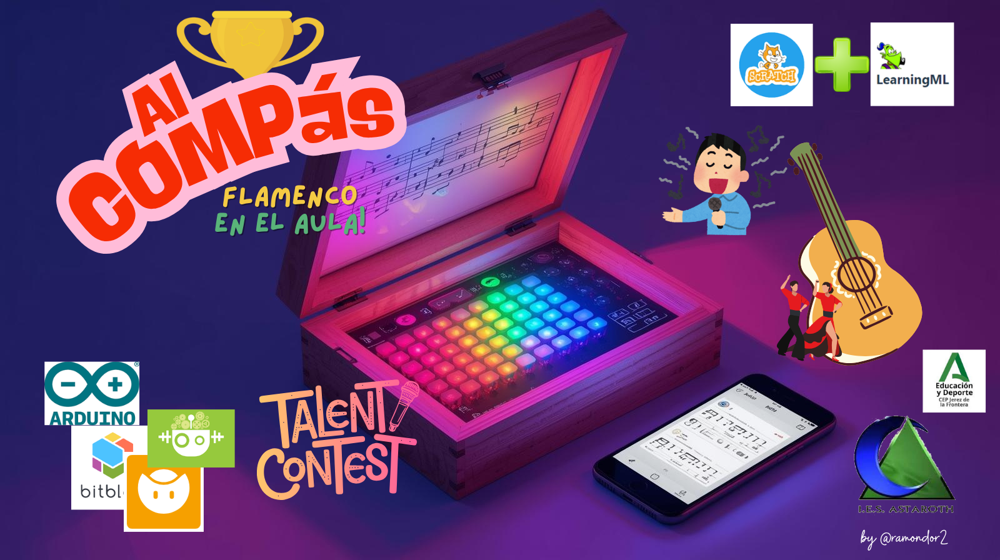

Justificación
El flamenco es una de las expresiones artísticas más representativas de la cultura española, con profundas raíces en la historia del pueblo gitano. A través de este proyecto multidisciplinar, los estudiantes podrán explorar el flamenco desde distintas perspectivas: su origen, su evolución, sus distintas formas de expresión (música, danza, poesía), su conexión con las matemáticas, la tecnología, la literatura y la historia, y la importancia de su inclusión en la sociedad.
Este proyecto, que culminará en un concurso interactivo, ofrece una manera de integrar el aprendizaje de varias disciplinas mientras se promueve la cultura del flamenco y se fomenta el respeto y la integración del pueblo gitano en la sociedad. La tecnología juega un papel clave, permitiendo la creación de un sistema interactivo de puntuación que conecta las materias de tecnología y arte. Además, el aprendizaje servicio propicia la sensibilización y la inclusión, trabajando directamente con la comunidad gitana local.
El proyecto fomenta el trabajo colaborativo entre asignaturas e integra el Diseño Universal para el Aprendizaje (DUA).
Descripción del Producto Final
Concierto o evento cultural flamenco inclusivo con la participación de la comunidad gitana local
Actividad: Organizar un evento cultural en la escuela o en un centro comunitario donde los estudiantes, junto con miembros de la comunidad gitana local, realicen un concierto o muestra de flamenco.
El objetivo sería integrar a los miembros de la comunidad gitana en el evento, crear un ambiente inclusivo y promover el respeto y la comprensión intercultural.
Objetivo: Fomentar la inclusión social de la etnia gitana, promoviendo el respeto hacia su cultura y sus tradiciones. Además, sensibilizar a la comunidad educativa sobre la importancia del flamenco y la integración cultural.
Producto: Un evento cultural en el que se mostrarán tanto las composiciones de los estudiantes como de los miembros de la comunidad gitana, con una charla explicativa sobre los orígenes del flamenco y su evolución.
Conexión con ODS:
- ODS 10 (Reducción de las desigualdades),
- ODS 16 (Paz, justicia e instituciones sólidas),
- ODS 4 (Educación de calidad).
Cada materia tiene un producto final que se conecta de manera natural con el proceso de aprendizaje, y todos estos productos culminan en el concurso de flamenco y el evento cultural inclusivo que permitirá que los estudiantes apliquen todo lo aprendido mientras se vinculan con la comunidad.
El Aprendizaje Servicio que se propone tiene un gran potencial para fortalecer los lazos con la comunidad gitana y promover la integración y la inclusión social. Este enfoque permitirá que los estudiantes vivan una experiencia significativa, tanto a nivel académico como social.
Objetivos de Aprendizaje
Los objetivos de aprendizaje de este proyecto multidisciplinar son:
- Fomentar el conocimiento sobre el flamenco: Su historia, evolución, palos y características. Comprender la importancia histórica y cultural del flamenco como patrimonio compartido.
- Desarrollar habilidades tecnológicas: Diseño, programación y construcción de un sistema interactivo de puntuación. Fomentar el uso creativo de la tecnología para la difusión y valoración de las tradiciones culturales.
- Aplicar conocimientos de matemáticas: Estudio de la proporción cordobesa y su relación con la guitarra flamenca. Aplicar conceptos matemáticos (proporción, geometría, medición) al diseño de objetos artísticos como la guitarra flamenca.
- Desarrollar competencias lingüísticas: Redacción de trípticos informativos en español e inglés sobre el flamenco. Desarrollar competencias lingüísticas en español e inglés para comunicar contenidos culturales.
- Promover la integración social y cultural: A través de actividades de aprendizaje-servicio relacionadas con la comunidad gitana y la cultura flamenca. Promover la integración social del pueblo gitano, visibilizando su papel en la historia y la sociedad.
- Estimular la creatividad: A través de la composición poética flamenca y la creación de coreografías de baile. Desarrollar la creatividad artística mediante la poesía, la música y la danza.
- Promover el trabajo colaborativo y la toma de decisiones: A través de la creación de un prototipo de concurso interactivo. Potenciar el trabajo cooperativo, la comunicación y la resolución de problemas
Materias Implicadas
Tecnología y Digitalización
Computación y Robótica
Plástica
Música
Educación Física
Inglés
Lengua Castellana y Literatura
Matemáticas
Ciencias Sociales